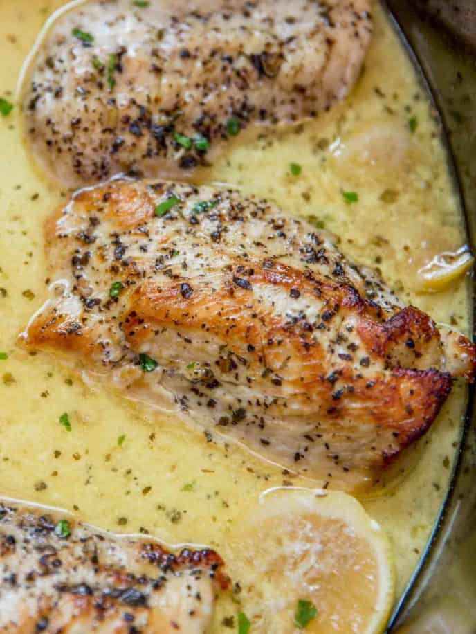

Slow Cooker Creamy Lemon Chicken

Description
Slow Cooker Creamy Lemon Chicken With Butter, Garlic And Lemon Coating Tender Chicken Breasts In A Creamy Sauce. Even Great As A Pasta Topping!
Ingredients
- 5 chicken breasts boneless and skinless
- 6 tablespoons unsalted butter divided
- 1/2 teaspoon kosher salt
- 1/4 teaspoon coarse ground black pepper
- 1 teaspoon Italian seasoning
- 2 lemons juiced and zested
- 2 garlic cloves minced
- 1 cup half and half
- 1 tablespoon cornstarch
- 1 tablespoon chicken base optional, but delicious!
Steps
- In a large cast iron skillet add 1 tablespoon of butter to melt on medium high heat.
- Add the kosher salt, black pepper and Italian seasoning to the chicken and add it to the pan.
- Cook on each side for 4-6 minutes.
- Add the chicken to your slow cooker.
- Cover with lemon juice, lemon zest, garlic and the rest of the butter in pieces (I added the lemons in the before picture just for reference. Don't cook the lemons in the slow cooker).
- Cook on low for 4 hours or on high for 2 hours.
- In a large measuring cup add the half and half, cornstarch and chicken base and whisk well.
- Add the liquid, mix, and cook an additional hour on high.